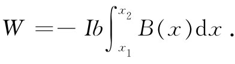

上一章我们研究了由一矩形小电流回路所产生的磁场。并发现那是一个偶极子场，其偶极矩由
μ=IA （15.1）
给出，式中I为电流而A为回路面积。矩的方向垂直于该回路平面，因而也就可以写成
μ=IAn，
式中n是该面积A的法向单位矢量。
一个电流回路或磁偶极子不仅会产生磁场，而且当置于其他电流的磁场中时也会感受到力的作用。我们将首先考察在一匀强磁场中作用于一矩形回路上的力。设z轴沿磁场方向，而回路平面则被置于通过y轴并与xy面成θ角，如图15-1所示。这样，该回路的垂直于回路平面的磁矩就将与磁场成θ角。
图15-1 一个通有电流I的矩形回路位于一匀强磁场B（沿z方向的）中。这样作用于该回路上的力矩就是τ=μ×B，其中磁矩μ=Iab
由于在矩形对边上的电流互相反向，所以作用在上的那些力也将反向，从而不会有净力作用于该回路上（当磁场均匀时）。然而，由于图中标明为1和2的两边上存在作用力，因此就有一个倾向于把该回路绕着y轴旋转的力矩。这两个力F1 和F2 的大小为
F1 =F2 =IBb.
它们的力臂为
asinθ，
从而该力矩为
τ=IabBsinθ，
或者，由于Iab是该回路的磁矩，所以
τ=μBsinθ.
这力矩还可以写成矢量形式：
τ=μ×B. （15.2）
尽管仅仅在一个相当特殊的情况下证明了力矩由式（15.2）所给出，但这一结果对于任何形状的小回路都正确，正如我们将会看到的。对作用于电场中一电偶极子上的力矩也有相同类型的关系式：
τ=p×E.
现在我们要询问这一电流回路的机械能。由于存在力矩，所以这能量显然与取向有关。虚功原理讲，力矩等于能量相对于角度的变化率，因而我们可写出
dU=τdθ.
令τ=μBsinθ并积分，则能量可以写成：
U=-μBcosθ+常数 （15.3）
（符号之所以为负，是因为该力矩企图把磁矩旋转至与磁场同向，当μ与B平行时能量最低）。
由于今后将会讨论到的一些原因，这一能量并不是 该电流回路的总能量（首先，我们未曾把回路中维持电流的那种能量计算在内）。因此，将这一能量称为U机械 ，就是要提醒我们它只是能量的一部分。并且，由于无论如何我们总已漏掉了某些能量，所以可令式（15.3）中的常数等于零。因而可把上式写成
U机械 =-μ·B. （15.4）
这再次与电偶极子的结果相对应：
U=-p·E. （15.5）
原来，式（15.5）中的静电能是真实的能量，但式（15.4）中的U机械 却不是实际的能量。然而，凭借虚功原理它仍可 用来计算力，假设回路中的电流或至少是μ保持不变的话。
我们能够证明：对于一个矩形回路来说，U机械 也相当于把该回路拿进场所需做的机械功。只有在匀强磁场中施于回路上的总力才等于零；在非均匀场中，则始终有 一净力作用于通有电流的回路上。在把该回路置于场中时，我们势必经过其中场并非均匀的一些地方，因而就做了功。为使计算简单起见，我们将设想该回路被带进场时它的矩沿着场的指向（在到达了指定位置之后，还可以转至最后位置）。
试设想我们希望把该回路沿x方向移至场较强的区域，而该回路的指向按图15-2所示。我们从场等于零的某处出发，并对回路移进场中时所受的力乘距离后进行积分。
图15-2 一个回路沿x方向移动，通过与x轴正交的B场
首先，让我们分别计算对每边所做的功，然后取其和（并非在积分之前就把力加起来）。作用于边3和边4上的力与运动方向垂直，因而没有做任何功。作用于边2上的力为IbB（x），在x方向，因而要获得抵抗磁力所做的功就必须从场为零的某处、比方说从x=-∞处积至它目前所处的位置，
同理，为抵抗磁力而对边1所做的功为
为求得每个积分，我们需要知道B（x）是怎样依赖于x的。但要注意，边1紧跟在边2之后，因而对它的积分就包括对边2做功的大部分。事实上，式（15.6）与（15.7）之和恰好就是
 （15.8）
但若在一个区域里边1与边2处的场B几乎相等，则可将该积分写成
式中B是在该回路中心处的场。我们所加进去的总机械能为
U机械 =W=-IabB=-μB. （15.9）
这个结果同我们把式（15.4）作为能量相一致。
当然，要是在进行积分以求得功之前先将作用于回路上的力相加起来，也应该获得同样的结果。如果令B1 为边1处、而B2 为边2处的场，则沿x方向总的力为
Fx =Ib（B2 -B1 ）.
若该回路很“小”，也就是说，若B2 和B1 相差不多，则可写成
这恰好又是-μB。直到如今我们才看出为什么作用于一小电流回路上的力 会与磁场的微商成正比，正如我们从
Fx Δx=-ΔU机械 =-Δ（-μ·B） （15.11）
中预料到的。
上述结果表明：即使U机械 =-μ·B可能并未包括系统的所有各种能量在内——它是一类膺造的能量——但它仍能同虚功原理一起被用来求得作用于恒定电流回路上的力。